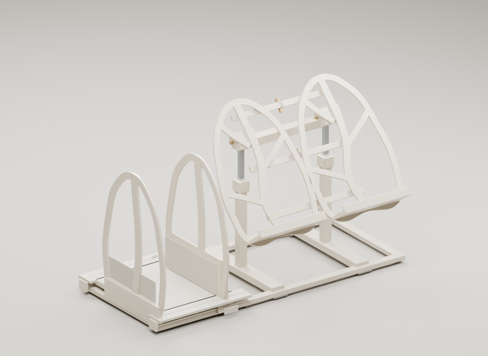

PRODUCT ENGINEERING
3–5 kg을 위한 경량 설계
알루미늄 6061-T6 · 계산 조건 기반
고정 북엔드

드래그 회전 · 스크롤 확대0
변형 표시 ×50형상
표시
경량화 안 · 계산한 부재의 결과
70:30 편심 · 상부 자중 포함
하중 계수 2.0 적용
부재 계산과 실제 내하중은 구분됩니다.관절·잠금장치·체결부와 베이스 포켓은 실물 하중 검증 전입니다. 아래 수치로 제품 전체의 5 kg 지지를 확정하지 않습니다.
3 kg → 5 kg 하중 비교
각도 30–75° 최대값| 책 무게 | 지주 휨 | 지주 응력 ×2 | 독서판 휨 | 관절 1개 요구 토크 ×2 |
|---|
같은 책 크기와 상부 자중을 적용합니다. 지주·관절은 0.1°, 독서판은 5° 간격으로 계산한 표본의 최댓값입니다. 관절 토크는 필요한 성능이며 장치의 실제 유지 능력이 아닙니다.
부재별 계산
| 검토 부재 | 사용 하중 휨 | 설계 하중 응력 | 계산 범위 |
|---|
휨은 사용 하중, 응력은 2배 설계 하중입니다. 데크는 책을 수직으로 세워 수납하는 별도 경우이며 독서대와 동시에 하중을 주지 않습니다. 0.5 mm 휨 목표는 지주 자체에 적용합니다. 240 MPa 항복 비교는 검토한 부재의 명목 응력 기준입니다.
무엇을 가볍게 바꿨나
8 mm 데크를 2 mm 상판과 2 × 6 mm 하부 리브로 변경합니다. 책이 닿는 높이는 유지합니다.
8 × 8 × 1 mm 지주, 18 × 14 × 1.5 mm 브리지. 연결 끝부분은 속을 채워 둡니다.
14 mm 외형 안에 9.2 mm 사각 구멍을 만듭니다. 원본의 막힌 내부를 수정했습니다.
장착부와 레일 아래를 남기고 바닥면을 비웁니다. 지붕·벽 2.5 mm는 제안 치수이며 강도 검증은 남아 있습니다.
현재 조건의 결과
조건 비교
현재 조건을 저장하면 하중과 결과를 나란히 볼 수 있습니다.
| 설계 | 하중 조건 | E | 휨 | 응력 |
|---|